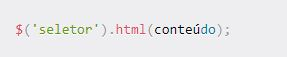
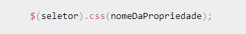
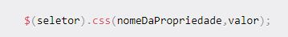

Sobre
Jquery

O jQuery é a biblioteca de JavaScript mais popular, sendo utilizada em mais de metade dos maiores sites. Ele torna o desenvolvimento para a web mais fácil de utilizar ao fornecer uma série de funções de "ajuda". Essas funções ajudam os programadores a escrever interações rápidas com o DOM (Document Object Model – ou Modelo Documento-Objeto, em português) sem a necessidade de escreverem manualmente tanto JavaScript. O jQuery adiciona uma variável global com todos os métodos da biblioteca anexados. A convenção para a nomenclatura é ter esta variável global como $. Ao escreveres $., ficas com todos os métodos jQuery ao teu dispor
Primeiros Passos
Existem duas formas principais para começar a utilizar o jQuery: Incluir o jQuery localmente: descarrega a biblioteca jQuery a partir de jquery.com e inclui a biblioteca no teu código HTML. Utilizar uma CDN: faz a ligação para a biblioteca jQuery utilizando uma CDN (Content Delivery Network – ou Rede de Entrega de Conteúdo, em português).


Seletores
O jQuery utiliza seletores de estilo CSS para selecionar partes ou elementos de uma página HTML. Depois, permite-te fazer alguma coisa com os elementos através da utilização de métodos jQuery ou funções. Para utilizar um destes seletores, escreve um caractere de dólar e parênteses depois dele: $(). Esta é a forma abreviada para a função jQuery(). Dentro dos parênteses, adiciona o elemento que queres selecionar. Podes utilizar tanto aspas simples como aspas duplas. De seguida, adiciona um ponto após os parênteses e o método que desejas utilizar. Em jQuery, a classe e os seletores de ID são representados da mesma maneira que em CSS. Aqui está um exemplo de um método jQuery que seleciona todos os elementos de parágrafo, adicionando uma classe "selected" aos elementos

Em jQuery, a classe e seletores de ID são escritos da mesma forma que em CSS. Se quiseres selecionar todos os elementos com uma determinada classe, utiliza um ponto (.) e o nome da classe. Se quiseres selecionar elementos com um determinado ID, utiliza o símbolo do cardinal (#) e o nome do ID. Observa que o HTML não é sensível a maiúsculas ou minúsculas. Por isso, é boa prática manter o código HTML e seletores de CSS em minúsculas.
Selecionar por ID:
Se quiseres selecionar elementos com um determinado valor de ID, utiliza o símbolo do cardinal (#) e o nome do ID.
Selecionar por valor de atributo:
Se quiseres selecionar elementos com um determinado atributo, utiliza ([nomeDoAtributo="valor"]).
Método HTML
O método do jQuery .html() obtém o conteúdo de um elemento HTML ou define o conteúdo de um elemento HTML.
Obter:
Para devolver o conteúdo de um elemento HTML, utiliza esta sintaxe:

Definir:
Para definir o conteúdo de um elemento HTML, utiliza esta sintaxe:
Método CSS
O método de jQuery .css() obtém o valor de uma propriedade de estilo computada para o primeiro elemento num conjunto de elementos correspondentes, ou define uma ou mais propriedades do CSS por cada elemento correspondente.
Obter:
Para devolver o valor de uma propriedade CSS especificada, utiliza a seguinte sintaxe:
Definir:
Para definir uma propriedade CSS especificada, utiliza a seguinte sintaxe:
